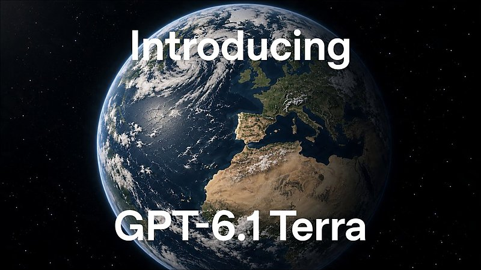

AI 日报 · 10月28日
AI 开始操作屏幕，也走进企业工作流
OpenAI 发布侧重视觉理解与电脑操作的 GPT-6.1 Terra，并与 Oracle 推进企业应用连接；Replit 提出 Agent Habitat，强调权限、审批与纠错。Builder 原帖提醒我们：能力扩展也需要检验执行边界。
电脑操作
企业 Agent
权限治理
产品迭代
4
Builder 动态
3
今日上榜项目
4
精选原文
1
公开视频
今日要点
更低成本的屏幕任务，仍须逐步验收
OpenAI 10 月 26 日发布 GPT-6.1 Terra，重点展示视觉理解、跨应用电脑操作和自然写作。官方称其标准 API 价格比 GPT-5.6 Terra 与 GPT-6.1 Sol 低 50%，并披露在多项内部或公开基准上的改进；这些成绩是厂商报告，实际任务仍需自行测试。
连接业务系统，也要说明谁能做什么
OpenAI 与 Oracle 10 月 27 日宣布把 Oracle 应用和数据带入 ChatGPT，设想在组织权限与审批下完成业务流程；Replit 同期提出 Agent Habitat，让 Agent 使用公司知识与系统，同时限定访问、保留人工批准和纠错记录。两者均是产品方向与发布方描述，不能等同于部署效果。
深度对话
产品护城河来自更快的真实学习
Every 原频道 10 月 14 日访谈投资人 Matt Hartman：从 Hugging Face 早期转向谈到技术团队的试错、产品观察和快速迭代。以下观点依据该期公开逐字稿整理；这期节目早于今天的产品发布。
技术能力让转向更灵活
Hartman 更关注创始人理解技术后还能发现哪些新可能，而非只坚持最初的垂直市场。
编码变快，观察用户更重要
他认为构建速度提升会压缩反馈周期，真正的产品洞察来自把产品放进真实场景并反复观察。
亲手试用是寻找问题的方法
他谈到自己制作语音输入工具以学习产品摩擦，并建议创业者持续把玩新工具、寻找尚未解决的问题。
资讯精选
模型、企业连接与垂直场景
OpenAI × Oracle｜企业应用进入 ChatGPT
双方提出通过 Oracle AI Workspace 连接财务、采购和计划等应用；拟议流程仍以组织已有权限与审批为边界。
Replit｜Agent Habitat 的公司级治理设想
Amjad Masad 主张为 Agent 提供公司知识、系统和协作环境，同时定义访问控制、人工批准与纠错反馈。
Anthropic｜非营利组织插件扩展
Claude for Nonprofits 新插件与约 30 家组织共同设计，覆盖募款、营销与招聘，先读取机构信息地图及 AI 使用政策。
已检查 feeds.json 的四条 RSS；截至本次取样，没有适合今日主线且可由原文核实的新条目。本栏采用 10 月 26–27 日的官方一手材料，日期不是事件都发生在今日的暗示。
Builder 动态
从模型发布到运行环境的实测
Thibault Sottiaux｜强调 Terra 的写作与电脑操作
OpenAI 的 Codex 与 ChatGPT 成员称 Terra 在写作、细腻理解请求和电脑操作上进步明显，并强调其使用额度；具体能力和价格以官方发布页为准。配图为其引用的 OpenAI 原帖视频画面。

Amjad Masad｜提出公司级 Agent Habitat
Replit 创始人描述由人判断、Agent 执行的公司形态；他把 Agent Habitat 称为承载知识、系统与协作的环境。Replit 原文进一步写明权限、审批与纠错机制。
Guillermo Rauch｜复现隔离环境里的隐蔽通信
Rauch 称自己在两台以上无网络的 Firecracker microVM 间，以 CPU 争用、缓存时序和内存带宽实现通信。他明确区分这种双方协作的通信与窃取信息的侧信道攻击；演示条件不等于所有生产环境都会受影响。
Peter Steinberger｜测试 Bun 的 AOT 编译器
Steinberger 分享自己的周末测试，称性能提升约 2–3 倍、内存低于一半。帖子没有给出可直接复核的统一基准，因此仅作个人实验线索。
GitHub Trending
设计约束、通用 Agent 与轻量 IDE


按 10 月 28 日 GitHub Trending 实时榜单筛选，并避开昨日重点项目。星标、分叉、语言和项目描述取自本次 GitHub API 快照，数字会变化；功能尚未独立测评。
今日思考
Terra 把模型推向屏幕操作，Oracle 与 Replit 把 Agent 推向组织流程；这会让权限、审批、审计和回退成为直接影响用户的产品设计。Rauch 的复现实验则提醒我们，隔离假设也要在具体运行环境中检验。今日一问：你准备交给 Agent 的下一项操作，谁授权、如何记录、何时停下、出了错又如何恢复？
参考来源
OpenAI｜GPT-6.1 Terra 发布
OpenAI｜Terra 安全卡补充
OpenAI｜与 Oracle 扩大合作
Replit｜自动驾驶公司与 Agent Habitat
Claude｜扩展非营利组织插件
Every｜Matt Hartman 访谈原频道视频
Every｜访谈逐字稿
Thibault Sottiaux｜Terra 原帖
Amjad Masad｜Agent Habitat 原帖
Guillermo Rauch｜隐蔽通信实验原帖
Peter Steinberger｜Bun AOT 测试原帖
GitHub｜10 月 28 日 Trending
Nutlope/hallmark
makecindy/cindy
JetBrains/thinkrail